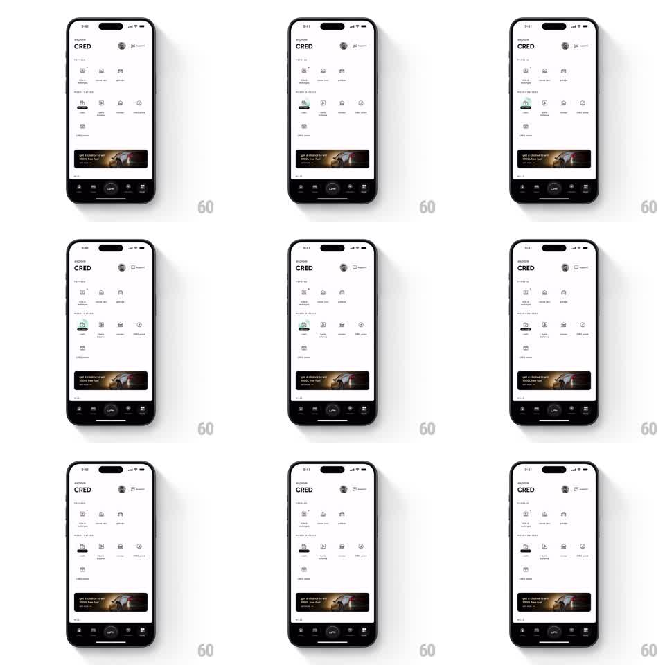

Media
Frame-by-frame

Rebuild this animation 1:1: a feature highlight pulse on CRED's home screen - one icon in a quiet grid of services gets a repeating soft glow + scale pulse to draw attention, while everything else stays perfectly still.

Rebuild this animation 1:1: a feature highlight pulse on CRED's home screen - one icon in a quiet grid of services gets a repeating soft glow + scale pulse to draw attention, while everything else stays perfectly still. ## Integration Integration: stack-agnostic spec - springs given as stiffness/damping, timed motions as duration + curve; map every value to your framework and animation library of choice. ## Scene Light fintech home: header (logo, avatar), "PAYMENTS" icon grid (4 columns of line icons + labels), a promo banner near the bottom, tab bar. One grid item (the highlighted feature) pulses. ## Motion spec Pattern: looping attention pulse. - The highlighted icon breathes: scale 1 -> 1.08 -> 1 over 1.6s, ease-in-out. - A soft accent-tinted glow (radial, behind the icon) fades in and out on the same 1.6s cycle, peak opacity ~0.5 at max scale. - Cycle repeats indefinitely with a 1s rest between pulses. - Nothing else on screen moves. ## Calibration - Amplitude stays subtle (8% scale) - this is a nudge, not a notification badge. - The glow is what carries it; the scale is backup. ## Reduced motion Static icon with the glow held at 30% opacity, no pulsing. ## Don't miss - Pulse timing never syncs with any other UI event - it idles independently. - The icon's label does not move; only the glyph + glow animate.